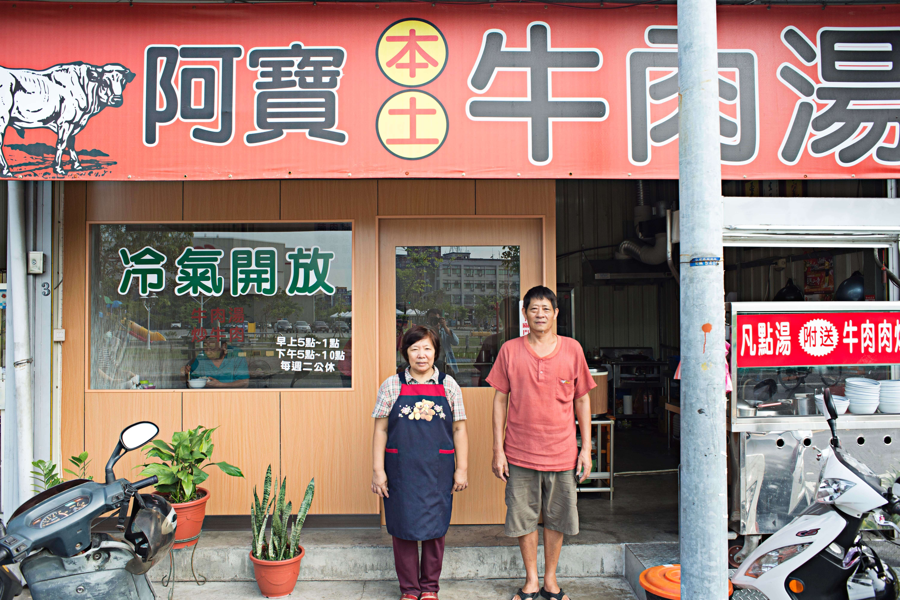
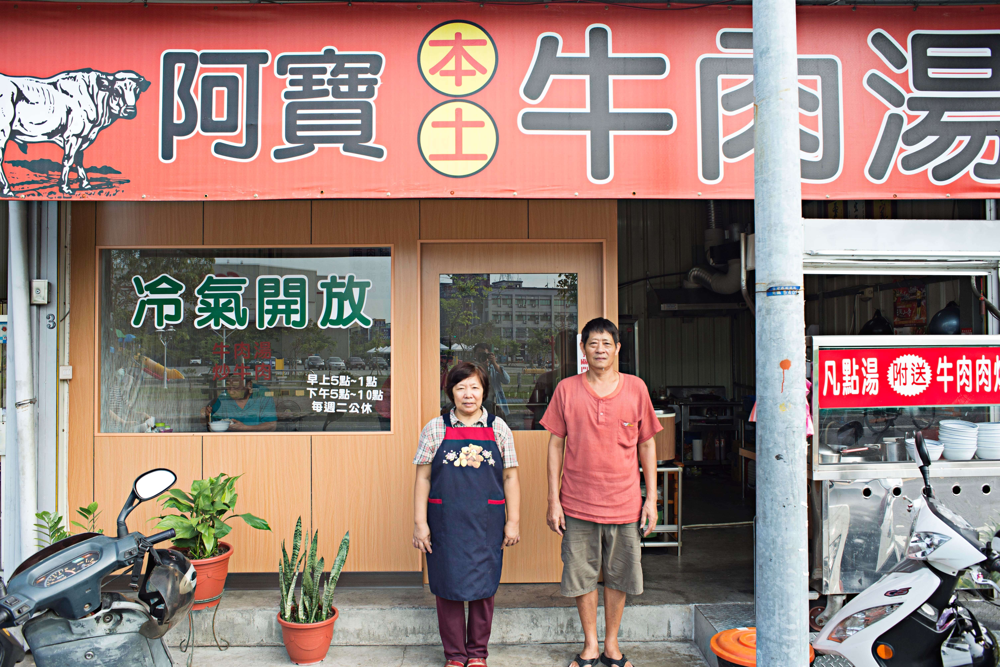

出團時間：2015/09/05
張小均（「我要征服臺南牛肉湯！！！」創辦人）
邱睦容、蔡明岳、王聖凱、鄭新國、簡維新、龎鈞翰 林思駿、施櫻琇、莊奇諭、周仕凱、Miky Wu
兵分三路、拜訪12間店、食用超過24道牛肉湯與料理。

觀察提問
「大家都用什麼交通工具來喝牛肉湯？」
「顧客如何點餐？」
「配什麼醬料？」
「喝牛肉湯的客群是哪些職業？」
「大家用哪種餐具喝牛肉湯？」
「為什麼外帶牛肉湯？」
「店內的衛生程度如何？」
「顧客與老闆的對話內容是？」
地圖製作：我要征服臺南牛肉湯!!! x 台南路上觀察團
“ 台南牛肉湯觀察搜集 ”

「歐吉桑是台南牛肉湯的幕後推手」
在清晨六點已有十多位客人進出，都是上了年紀的歐吉桑單獨前來店內享用牛肉湯和白飯。
-美 牛肉湯-
「是早餐不是觀光食物」
客人大多是在地人、學生。也有觀光客，但都９點以後才會出現。
大多數客人都是進門後直接點餐（不看菜單），非常熟門熟路。大部分客人吃東西的速度很快，吃完就走，像是在用早餐一樣（但本來就是早餐嘛）。
-永福牛肉湯-

「牛肉湯界的美而美」
很像早餐店，許多人外帶。50歲以上的男性消費者居多。
清香牛肉湯

「凹下去的砧板」
切到凹下去的砧板，職人精神非常迷人。
永福牛肉湯

醬油膏瓶的倒立工具！
圓環頂牛肉湯

牛肉湯的源頭-「牛肉鋪」
以前的攤位會使用”舖”字，好可愛呀，查了一下可能跟日治時期的使用有關係，舖這個字在近50年使用在店家的情形變少了。
市場裡的牛肉攤

「與神明的距離很近很近」
店剛好就在城隍廟旁，等待的同時，嗅到廟宇內的陣陣檀香味撲鼻而來。
美 牛肉湯
發現店家後方是ㄧ間馬府大帝的廟宇，覺得有點奇妙。
金 牛肉湯
「像是『自家廚房』的設計」
這位歐吉桑好似特意安排坐在獨有一張位於料理區旁側的座位，就這麼和店家老闆娘與共事的阿姨像是家人老友一樣大聊。
美 牛肉湯
「每一家店都有自豪的湯頭」
每家牛肉湯都有引以為傲的自熬湯頭，牛大骨、蔬果、中藥...，被問起就隨時豪爽的撈起來給顧客。
美 牛肉湯
 

台南人愛吃牛肉湯的理由
台灣人從日治時期開始吃牛，而「喝牛肉湯」這件事則是從台南開始的，我們觀察到「構成台南人愛喝牛肉湯的三大元素」，有人、食物、歷史因素。
除了早期做工的人需要肉食補充體力的歷史因素，在光顧的這些店內，有閒話家常的問候，也遇到了拿一碗清湯，在店門口就教起客人如何分辨味精湯頭的店家，或是因為知道觀察團要來吃牛肉湯，而妝水水、端正地坐在旁邊等候被發問的老闆娘，足以見得店家重視的心意。
而擁有一等屠宰業者的台南，每日四班供輸著新鮮現宰的牛肉。每間店自豪的特製湯頭，有的使用中藥、蔬果、牛內臟，有的店甚至每天要熬上八小時，也是構成美味的不可或缺。不少牛肉湯業者表示，台南人捨得、敢花，推測這也是這一點，讓牛肉湯的美味與店家的付出產生了正向循環。
在二十多碗湯的試驗下，我們看到了牛肉湯在美食光環下，發生於常民之間的「人情」：有業者因為看著熟客每天光顧，而放棄加味精，擔心餵毒給這些已是朋友的人客；有的店家因為擔心某位常客感染了登革熱，而特地騎車到常客家關心；在販售的牛肉湯之外，在閒聊間也附帶著叮嚀、問候──「你每天都吃肉，要多吃一些蔬菜啦～」、「手機又忘記帶走，這樣會....#$%&」。
或許有人會說，不是所有台南人早餐都喜歡喝牛肉湯，但經過這次觀察，我們發現了台南人鍾情於牛肉湯的原因。